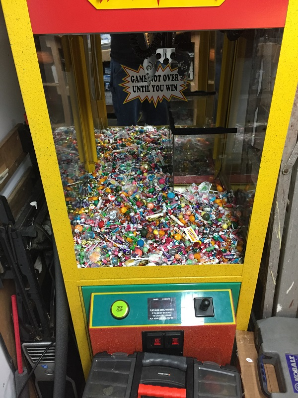

This
site is dedicated to the documentation of supplemental information to
restore a Claw Machine Snack Attack made by A.G.E.. I acquired the game
non-working and badly damaged from a shutdown comic book store on
craigslist

So This machine was non functioning when obtained from craigslist, the
power supply was missing and obviously exploded due to burn marks on
the game. otherwise the claw had some damage due to forced entry when
people didnt have the keys to the game.
My particular game is made by a company out of business now called
A.G.E. a company named
ICE
Amusements has taken over the A.G.E. products. The ICE company has nothing really spicific to the A.G.E. games.
Some
things of note about this Snack Attack vs the ICE games or other A.G.E.
games of this time frame, my game drops the prize in the right rear of
the game, This is noteworthy because the game code is specifically
written for this drop location, as far as I am aware this isnt
something that is interchangeable or configurable. So my game and
software and CPU wont work in other systems (lovely)
The game
I have did come with the upper "plug lock" this is important to note as
its not replaceable they were custom built and not a part that you
could locate otherwise, form what I have been told.
The game has a
dixie narco T-plug lock that was damaged on my game. This isnt as
critical to the operation of the system in any way.
First on the
repair list was to locate a power supply, testing with my lab supply
and a computer supply shows that the game needs more then 3A
After
getting the game operational I found that the belts on the game were
very dry and not functioning - I took the upper claw assembly out of
the game and cleaned it very good (this is critical) no grease or dirt
should be on the unit. I purchased new belting from
www.ebelting.com and then prepared and dressed new belts for the game
Finally
I finished off the game T-Lock by purchasing a few of them off ebay,
Turns out the game uses a different style not used in vending
typically. So rather then try further I just used a XXX bolt and slotted